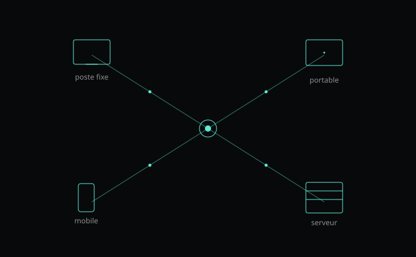

Lorsqu'une cyberattaque touche une entreprise, vous en découvrez souvent les conséquences lorsqu'il est déjà trop tard : fichiers inaccessibles, activité perturbée, comptes compromis ou données volées. Pourtant, dans bien des cas, l'attaque a commencé plusieurs jours auparavant sans que personne ne s'en aperçoive.
Et c'est peut-être votre cas : vous disposez déjà d'un antivirus, mais vous vous demandez s'il suffit encore à protéger votre entreprise. C'est justement cette question qui pousse de plus en plus d'organisations à chercher un moyen de repérer les comportements suspects avant qu'ils ne provoquent des dégâts.
Dans ce contexte, les EDR (Endpoint Detection and Response) occupent une place importante et croissante dans les stratégies de cybersécurité. Mais à quoi sert réellement cet outil ? Comment fonctionne-t-il ? Et pourquoi de plus en plus de PME choisissent-elles de s'en équiper ?
EDR : qu'est-ce que c'est et à quoi ça sert ?
Que signifie EDR ?
EDR signifie Endpoint Detection and Response, que l'on peut traduire par détection et réponse sur les terminaux. Derrière cette définition un peu technique se cache en réalité une idée assez simple : surveiller ce qui se passe sur les ordinateurs et les équipements de votre entreprise afin d'identifier rapidement les signes d'une cyberattaque.
Pour bien comprendre le rôle d'un EDR, il faut donc s'intéresser aux deux notions qui composent son nom : la détection et la réponse. Détecter consiste à repérer une activité inhabituelle avant qu'elle ne provoque des dégâts importants. Répondre consiste à fournir les informations et les moyens d'action nécessaires pour agir rapidement.
Un EDR ne se limite donc pas à bloquer une menace connue. Il améliore la détection au sein de votre informatique et, selon la solution, peut aussi réagir par lui-même, par exemple en isolant un poste suspect. Son intérêt est d'abord de vous donner de la visibilité sur ce qui se passe avant qu'un incident ne perturbe votre activité.
Que signifie « endpoint » en cybersécurité ?
Quand on parle d'endpoint, on a vite l'impression d'être face à un nouveau terme technique sorti tout droit du jargon cybersécurité. Pourtant, vous en utilisez probablement plusieurs dizaines chaque jour sans y penser.
Votre ordinateur portable strong> en est un, le poste de travail de votre assistant aussi, tout comme les serveurs de l'entreprise ou certains smartphones professionnels.
Le terme endpoint désigne simplement chacun de ces équipements. Autrement dit, tous ces appareils sur lesquels des données circulent, des comptes sont utilisés et des actions sont réalisées au quotidien.
Pourquoi les experts en cybersécurité s'y intéressent-ils autant ? Parce que c'est souvent là que les attaques commencent. Un lien frauduleux ou un fichier piégé peut par exemple compromettre un poste de travail et donner à l'attaquant un premier accès à l'entreprise.
Si vous souhaitez repérer une cyberattaque rapidement, il est logique de commencer par surveiller les équipements que vos collaborateurs utilisent tous les jours. C'est l'un des fondements de la protection des postes de travail en entreprise.
Que signifie « Response » ?
Détecter une cyberattaque strong> , c'est une chose. Savoir quoi faire ensuite, c'en est une autre.
Imaginons qu'une activité inhabituelle soit repérée sur l'un des ordinateurs de votre entreprise. À première vue, c'est plutôt une bonne nouvelle : l'outil a identifié un comportement suspect et permet aux équipes de s'y intéresser rapidement.
Mais dans la pratique, les questions arrivent très vite. Quel poste est concerné ? Depuis quand cette activité a-t-elle commencé ? D'autres équipements sont-ils touchés ? S'agit-il réellement d'une cyberattaque ou simplement d'un comportement inhabituel sans conséquence ?
Lorsqu'un incident de cybersécurité survient, il ne suffit pas de recevoir une alerte. Encore faut-il comprendre ce qui se passe afin de prendre les bonnes décisions : isoler un poste, couper un accès ou lancer des vérifications supplémentaires.
C'est précisément ce que recouvre la notion de « Response » dans Endpoint Detection and Response (EDR).
Prenons un exemple : une activité suspecte est détectée sur l'ordinateur d'un collaborateur. Sans informations complémentaires, vous savez seulement qu'un problème existe. Avec les fonctions de réponse d'un EDR, les équipes informatiques peuvent généralement remonter le fil des événements : comprendre ce qui a déclenché l'alerte, vérifier si d'autres postes sont concernés ou encore décider d'isoler temporairement l'équipement afin d'éviter une propagation.
Autrement dit, la détection permet de savoir qu'un problème existe. La réponse permet de savoir comment agir.
Pourquoi les cyberattaques passent souvent inaperçues au départ ?
Pourquoi les cybercriminels cherchent-ils à rester discrets ?
On imagine souvent qu'une cyberattaque commence au moment où quelque chose se bloque. Dans la réalité, les attaquants ont souvent intérêt à attendre.
Plus ils restent discrets, plus ils ont le temps de comprendre comment votre entreprise fonctionne : quels outils vous utilisez, quels comptes disposent des accès les plus importants. Bref, ce temps leur permet de mieux comprendre votre environnement et de repérer les données qui les intéressent.
Pendant plusieurs jours, parfois bien davantage, rien ne semble anormal. Vos équipes continuent de travailler et les logiciels fonctionnent comme d'habitude. Pourtant, une activité malveillante peut déjà être en cours. En France, il faut en moyenne 213 jours pour identifier une violation de données, puis 71 jours pour la contenir, d'après le rapport Cost of a Data Breach 2025 d'IBM.
Lorsque les conséquences deviennent visibles, les attaquants ont parfois déjà eu le temps d'explorer une partie de vos systèmes.
Pourquoi les premiers signes sont-ils difficiles à repérer ?
Le problème, c'est qu'une cyberattaque ne ressemble pas toujours à ce que l'on imagine.
Il n'y a pas forcément d'écran noir ou de message inquiétant. Et encore moins une alarme qui se déclenche au premier comportement suspect.
Dans de nombreux cas, les premiers signes passent complètement inaperçus. Un compte qui se connecte à un horaire inhabituel, un logiciel qui lance une action inattendue, un poste de travail qui communique avec un serveur inconnu, etc. Pris séparément, ces événements ne semblent pas forcément alarmants.
Vous ne passez probablement pas votre journée à surveiller les connexions réseau ou les journaux d'activité de vos ordinateurs. Et vos équipes non plus.
Le problème, c'est que les cybercriminels le savent. Ils profitent justement de cette absence de visibilité pour agir en toute discrétion. Les premiers indices existent parfois, mais ils se perdent facilement au milieu de centaines d'actions réalisées chaque jour sur votre informatique.
Que peut-il se passer lorsqu'une attaque n'est pas détectée rapidement ?
Au départ, rien ne semble vraiment différent... jusqu'à ce que les premiers problèmes apparaissent. Les PME sont loin d'être épargnées : selon le Panorama de la cybermenace 2025 de l'ANSSI, les TPE, PME et ETI représentent 48 % des victimes de rançongiciels en 2025, contre 37 % en 2024.
Les conséquences varient d'une cyberattaque à l'autre. Il peut s'agir d'un vol de données sensibles, d'un compte utilisateur compromis, d'un logiciel malveillant ou encore d'un ransomware qui bloque l'accès aux fichiers de l'entreprise.
Mais au-delà de l'aspect technique, c'est souvent l'activité qui est touchée. Certains services sont ralentis, des opérations doivent être interrompues le temps d'identifier le problème et de sécuriser vos systèmes.
C'est pour cette raison que la détection précoce est devenue un enjeu très important. Plus une activité suspecte est repérée rapidement, plus il est généralement possible de limiter les conséquences sur les données, les utilisateurs et le fonctionnement de l'entreprise.
Comment fonctionne un EDR dans une entreprise ?
Comment un EDR surveille-t-il les postes de travail ?
Dans une entreprise, une grande partie de l'activité passe aujourd'hui par des équipements connectés. Vous consultez vos e-mails depuis votre ordinateur portable. Vos équipes utilisent des applications métiers. Des documents sont créés, modifiés et partagés tout au long de la journée.
C'est sur ces équipements, que l'on appelle aussi des terminaux, qu'un EDR concentre sa surveillance.
Pour assurer cette protection des postes de travail, un petit logiciel est généralement installé sur chaque équipement concerné. Les spécialistes parlent souvent d'agent logiciel. Son rôle est d'observer ce qui se passe sur le poste : les programmes qui se lancent, les connexions qui sont établies ou encore certains événements susceptibles de révéler une cyberattaque.
Rassurez-vous, l'objectif n'est pas de surveiller l'activité de vos collaborateurs. L'EDR cherche avant tout à comprendre ce qui se passe sur les équipements qui composent votre informatique afin de repérer plus rapidement les comportements inhabituels.
Cette surveillance continue s'effectue en arrière-plan . La plupart du temps, les utilisateurs ne remarquent même pas sa présence. Pourtant, c'est grâce à cette collecte d'évènements que l'EDR peut ensuite identifier certains signaux faibles qui passeraient autrement inaperçus.
Comment un EDR repère-t-il les comportements suspects ?
Dans une entreprise, des centaines d'actions ont lieu chaque jour. Et une activité malveillante peut facilement s'y glisser, l'air de rien, sans que personne ne la remarque.
Ce sont justement ces signaux faibles qu'un humain ne peut pas surveiller en continu. L'EDR, lui, peut analyser les informations collectées sur les équipements afin de repérer des comportements suspects.
Que se passe-t-il lorsqu'une activité suspecte est détectée ?
Imaginons que votre prestataire informatique vous appelle : un comportement bizarre vient d'être détecté sur l'un des ordinateurs de l'entreprise.
À ce stade, personne ne parle encore de cyberattaque, puisque personne ne sait réellement ce qui se passe. Un signal a simplement attiré l'attention, et il va falloir vérifier ce qu'il cache.
C'est précisément le rôle d'une alerte.
Sans elle, l'activité aurait probablement continué comme si de rien n'était. Avec elle, les équipes disposent d'un point de départ pour comprendre ce qui se passe et déterminer si elles sont face à un véritable incident de sécurité.
Dans certains cas, quelques vérifications suffisent à lever le doute. Dans d'autres, il faut aller un peu plus loin : identifier l'origine du problème, vérifier si d'autres équipements sont concernés et, si nécessaire, agir pour éviter qu'une éventuelle cyberattaque ne se propage à l'ensemble du réseau.
C'est ce que l'on appelle la réponse à incident.
Certaines solutions Endpoint Detection and Response permettent même d'isoler temporairement un poste de travail du reste du réseau lorsqu'un risque important est identifié. L'objectif n'est pas de bloquer l'activité inutilement, mais de limiter la propagation d'une menace strong> le temps de comprendre la situation.
Au fond, tout l'intérêt d'un EDR est là : vous avertir lorsqu'un comportement mérite votre attention et vous donner les moyens d'agir avant qu'un problème limité ne devienne un problème beaucoup plus important.

Quelle différence entre un EDR et un antivirus ?
Mon antivirus me protège-t-il déjà ?
Si vous utilisez des ordinateurs dans votre entreprise, vous avez sans doute déjà un antivirus. Et heureusement ! Il reste une protection essentielle contre de nombreuses menaces.
Son rôle ? Détecter et bloquer ce qui pourrait mettre vos équipements en danger. Et contrairement à l'image qu'on en a parfois, les antivirus modernes ne se contentent plus de comparer chaque fichier à une liste de menaces déjà connues. Ils peuvent aussi analyser certains comportements suspects pour repérer une activité malveillante.
Alors, si votre antivirus fait déjà tout ça, à quoi bon ajouter un EDR ?
Pourquoi parle-t-on autant des EDR aujourd'hui ?
Parce que les cyberattaques ont, elles aussi, évolué. Elles n'arrivent pas toujours avec un fichier manifestement malveillant qui déclenche aussitôt une alerte. Certaines sont beaucoup plus discrètes : elles détournent des outils déjà présents sur l'ordinateur, utilisent des accès légitimes ou tentent simplement de se fondre dans l'activité habituelle.
Certaines attaques peuvent même s'exécuter sans reposer sur un fichier malveillant classique. On parle alors d'attaque sans fichier. Dans ce genre de situation, une protection antivirus essentiellement centrée sur l'analyse des fichiers peut atteindre ses limites.
Et c'est justement là que l'EDR devient intéressant. Il observe en continu ce qui se passe sur les équipements et peut repérer une activité qui sort de l'ordinaire, même si aucun fichier clairement malveillant n'a été détecté. Une action inhabituelle ne signifie pas forcément qu'une attaque est en cours. Mais elle peut donner aux équipes une bonne raison d'aller voir ce qui se passe et, si nécessaire, de réagir.
Faut-il choisir entre un EDR et un antivirus ?
C'est souvent là que les choses deviennent confuses. Si l'EDR surveille les postes et détecte des comportements suspects, est-ce que cela signifie que votre antivirus ne sert plus à rien ?
Non. Et opposer les deux serait un peu trop simple.
L'antivirus cherche avant tout à détecter et bloquer les menaces. L'EDR apporte davantage de visibilité sur ce qui se passe sur vos équipements : il permet de repérer des activités suspectes, de les analyser et de remonter le fil des événements lorsqu'il faut comprendre ce qui s'est passé.
Autrement dit, l'un ne rend pas forcément l'autre inutile. Leurs fonctions peuvent se compléter, et de nombreuses solutions réunissent d'ailleurs aujourd'hui plusieurs de ces capacités dans un même outil.
| Antivirus | EDR |
|---|---|
| Détecte et bloque les menaces | Surveille en continu l'activité des équipements |
| Peut repérer des fichiers, programmes ou comportements malveillants | Repère et analyse des activités suspectes |
| Se concentre surtout sur la protection | Aide aussi à enquêter et à comprendre ce qui s'est passé |
| Peut intégrer de l'analyse comportementale | Permet de remonter le fil des événements et, selon la solution, d'agir pour contenir la menace |
Ce tableau reste volontairement simplifié. Dans la réalité, la frontière est de moins en moins nette : les antivirus de nouvelle génération analysent eux aussi les comportements, tandis que certaines plateformes regroupent antivirus et EDR au même endroit.
Bref, la vraie question n'est pas forcément « antivirus ou EDR ? », mais plutôt : de quel niveau de visibilité et de capacité de réaction votre entreprise a-t-elle besoin ?
Un EDR suffit-il à protéger une entreprise ?
Pourquoi la détection ne suffit-elle pas toujours ?
Une alerte remonte sur l'un des ordinateurs de votre entreprise. Sur le papier, c'est plutôt rassurant : quelque chose a attiré l'attention avant que les conséquences ne deviennent visibles. Mais recevoir une alerte ne veut pas encore dire que l'on sait quoi faire.
Certaines situations se règlent vite. D'autres demandent davantage d'analyse pour comprendre l'ampleur du problème et décider de la réaction à adopter. C'est aussi pour cette raison que les outils ne remplacent pas totalement l'expertise humaine.
Pourquoi un EDR ne remplace-t-il pas une stratégie de cybersécurité ?
Installer un EDR ne suffit pas à régler le problème. Si une alerte remonte mais que personne ne sait qui doit intervenir, si les responsabilités ne sont pas clairement définies ou si aucune procédure n'existe en cas d'incident, la situation peut vite devenir compliquée. Car lorsqu'une cyberattaque survient, les questions ne sont pas uniquement techniques : il faut aussi savoir comment organiser la réponse et maintenir l'activité pendant l'incident.
Une stratégie de cybersécurité ne se construit pas le jour où une attaque est détectée : elle se prépare en amont. Un ancien collaborateur peut encore disposer d'un accès qu'il ne devrait plus avoir. Les sauvegardes, elles, peuvent être bien en place sans que personne ait vérifié récemment si elles permettraient vraiment de reprendre l'activité en cas de problème. Autant de situations qu'un EDR ne peut pas régler à lui seul.
Certaines entreprises préparent aussi leur réaction à l'avance : qui prévenir, quels accès suspendre, quelles actions engager en priorité. C'est tout l'intérêt d'un plan de réponse à incident.
Mais autant éviter d'en arriver là quand c'est possible. L'authentification multifacteur, par exemple, permet d'ajouter une protection supplémentaire aux accès de l'entreprise.
L'EDR apporte de la visibilité sur ce qui se passe dans le système d'information. La stratégie de cybersécurité, elle, définit la manière dont l'entreprise se prépare, s'organise et réagit lorsqu'un incident survient.
Pourquoi certaines entreprises choisissent-elles un accompagnement spécialisé ?
Dans beaucoup d'entreprises, la cybersécurité n'occupe pas les journées entières d'une équipe dédiée. Votre activité consiste avant tout à servir vos clients, à développer vos projets ou à faire tourner votre organisation, pas à surveiller en permanence les alertes qui remontent sur le système d'information.
Le problème, c'est que les cyberattaques, elles, ne respectent pas les horaires de bureau. Une alerte peut très bien remonter en pleine nuit ou pendant un week-end, au moment où personne n'est disponible pour vérifier ce qui se passe.
C'est l'une des raisons pour lesquelles certaines entreprises choisissent un accompagnement spécialisé, avec par exemple un service d'EDR managé ou de MDR (Managed Detection and Response). L'objectif n'est pas seulement de disposer d'un outil de plus, mais de pouvoir s'appuyer sur des professionnels capables de surveiller les alertes, d'aider à comprendre la situation et d'intervenir plus vite lorsqu'un incident survient.
Selon la taille de l'entreprise, ce rôle peut être assuré par une équipe interne, un prestataire cybersécurité ou un SOC (Security Operations Center) chargé de superviser l'environnement informatique.
Un contenu à valoriser ?
Me contacter